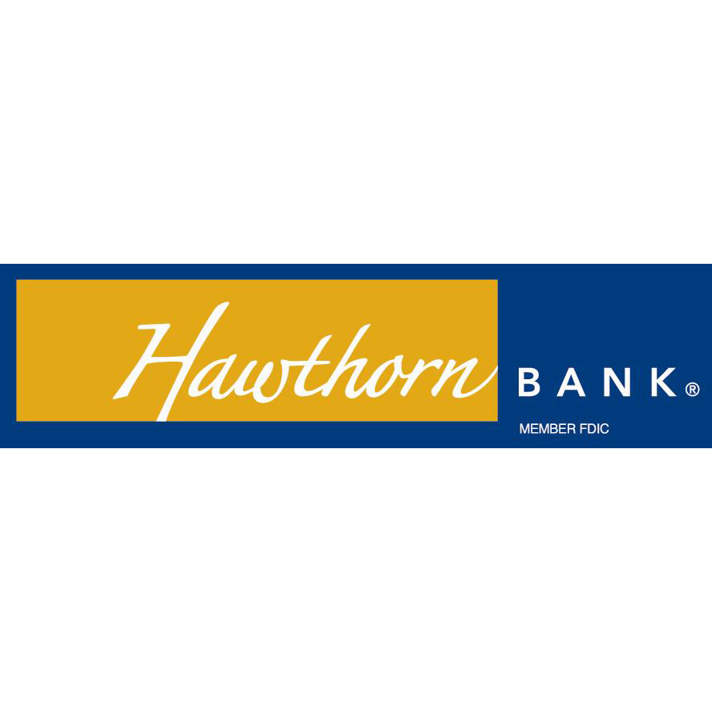
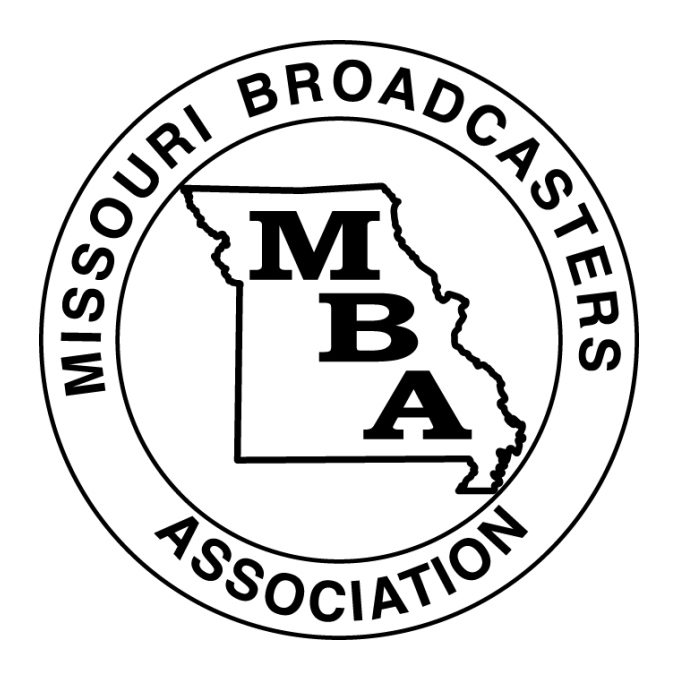

MUJW would not exist without the help of people like you!

The Missouri School of Journalism would like to thank to following sponsors for allowing this workshop to take place.

The Associated Press
Blue Jay Journal of Washington High School

Central Bank of Boone County

Commerce Bank

Hawthorn Bank

Jag TV - Blue Springs

Landmark Bank

Missouri Broadcasters Association

Missouri School of Journalism

Springfield News-Leader

The St. Louis American